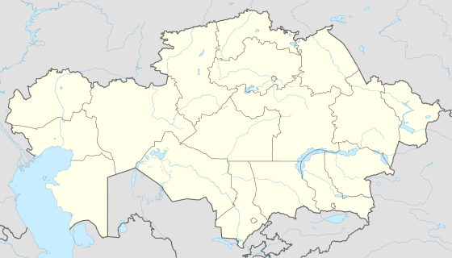

The village of Ekibastuz was established in 1899, named after the nearby lake of the same name, which means 2 heads of salt in Kazakh (eki 'two' + bas 'head' + tuz 'salt').
The history of Ekibastuz begins in the 19th century, when Kosym Pshembayev, a native Kazakh who was commissioned by Russian merchants to look for mineral resources in that region, alighted on a coal field southeast of Pavlodar.